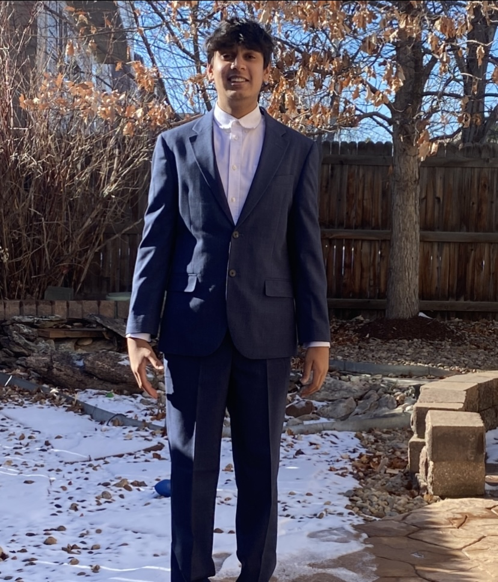

Hi, I'm Ved Agrawal
Hi! My name is Ved Agrawal and I am currently a third-year student at Northeastern University studying Data Science and Business Administration with a concentration in Finance. I have taken classes such as Data Mining and Machine Learning, Calculus for Business, Corporate Finance, and Financial Management.
My interests lie in machine learning, data analytics, and private equity. I have expertise in predictive modeling, data visualization, and machine learning algorithms using tools like Python and SQL. I have worked on projects involving large-scale data processing, statistical analysis, and financial modeling.
Specifically, I have worked on projects such as predicting optimal playtime for NBA players, analyzing the Boston Marathon, and analyzing Boston crime around college campuses. I have also developed a strong foundation in investment strategies and private equity evaluation.
Through this intersection, I have understood how businesses can make data-driven decisions. I believe I bring a unique perspective because I understand multiple perspectives of a business. Overall, I have a strong commitment to gain hands-on experience through internships or co-op programs to apply my knowledge in real-world scenarios.
I would be interested in collaborating with industry professionals, and continue expanding my knowledge in data science and finance. I am always open to networking and learning from others in the field.
